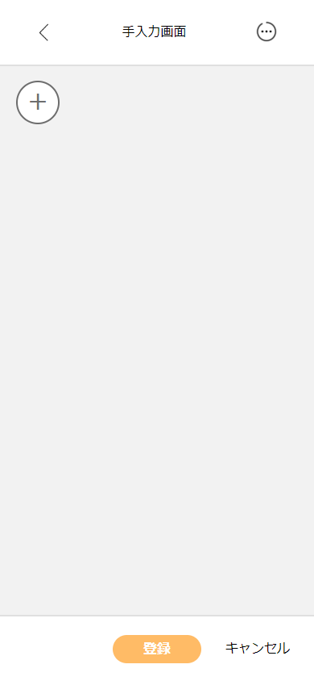
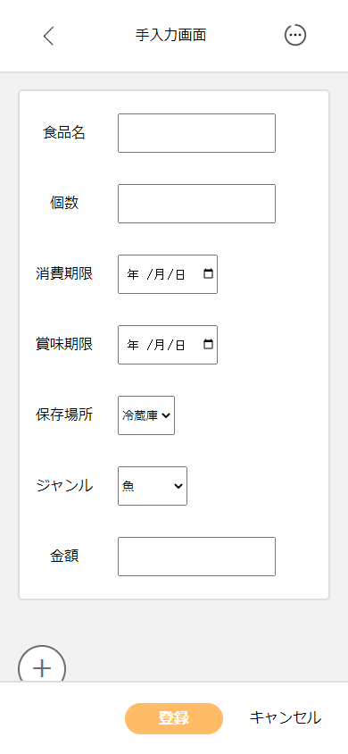
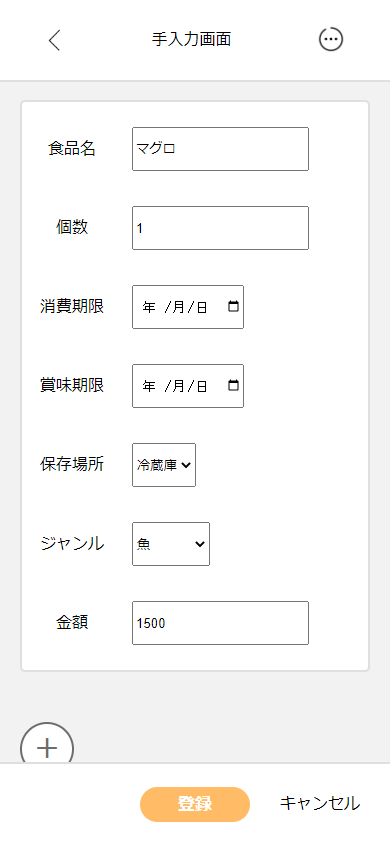
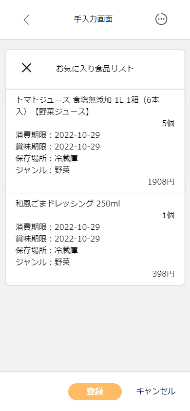
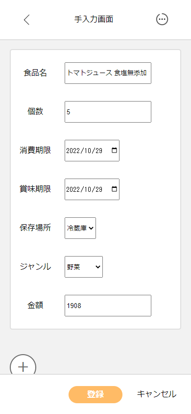

手入力で食品を登録する

１．手入力画面に移動します。

２．左にあるプラスボタンを押して、入力フォームを 表示させます。

３．入力フォームが表示されたので、食品の情報を入力します。
４．食品の情報を入力し終えたら、「登録」ボタンを押して食品の登録を完了させます。
お気に入り食品リスト
１．右上にあるボタンを押して、お気に入り食品リストを表示させます。

２．お気に入り食品リストから登録したい食品を選択します。

３．お気に入り食品リストから選択した食品が入力フォームに反映されます。